The pi-calculus, informally¶
A calculus is a method or computation based on symbolic manipulation.
- In differential calculus, symbolic manipulations involve an operator 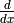 that satisfies rules such as the following:
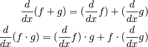
- In integral calculus, symbolic manipulations involve an operator 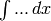 that satisfies rules such as the following:
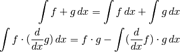
- In the
 -calculus, symbolic manipulations involve an operator that has its manipulation rules, involving operations such as substitution of variables and applying functions to particular “input” values (function calls).
-calculus, symbolic manipulations involve an operator that has its manipulation rules, involving operations such as substitution of variables and applying functions to particular “input” values (function calls).
The operators and manipulation rules for a calculus may have useful concrete applications. For example, the differential calculus rules are satisfied by certain continuous mathematical functions, where the operator represents the rate of change of those functions.
We typically think of as operating on those functions, although the differential calculus rules are actually abstract and might be applied to other entities than functions.
The
 -calculus has six operators. We think of them as operating on sequential processes, i.e., running computer programs, although they are abstract and can be used without any particular concrete application.
-calculus has six operators. We think of them as operating on sequential processes, i.e., running computer programs, although they are abstract and can be used without any particular concrete application.The concurrency operator (pronounced “P par Q”) may be thought of as two processes P and Q executing in parallel (e.g., simultaneously on separate cores or on different computers).
The communication operators may be thought of as sending and receiving messages from one process to another, across a communication channel that is used only by those two processes (i.e., a dedicated communication channel in the language of CS).
The output prefixing operator 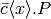 (pronounced “output x along c (then proceed with P)”) may be thought of as send a message x across a channel c, then proceeding to carry out process P. Here, the channel c may be thought of as starting from this process to another.
Channels such as c may be set up between any two processes, but those two processes are then uniquely determined for c, and may not be changed later. Channels provide for a single communication in one direction only, specified when the channel is created.
The “dot” that appears in this notation indicates the boundary between one step and a next step in a process.
The input prefixing operator 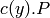 (pronounced “Input y along c”) may be thought of as waiting to receive a value from the channel c, and once a value is received, storing that value in y and proceeding to carry out process P.
The replication operator (“bang P”) may be thought of as creating a new process that is a duplicate of P.
This sort of an operation is quite realistic in parallel computing. For example, a web server is a program that receives requests for particular web pages and responds by sending those web pages. Web servers must be capable of handling multiple responses at the same time, because some web pages may take a significant amount of time to prepare and deliver, and it would be undesirable for one user to be delayed by another user’s request. Therefore, a web server system may start up a new duplicate process for handling each request it receives. (Students who have studied operating systems will also see an analogy between the system call fork() and this replication operator.)
In the
-calculus, arbitrarily many duplicate processes are created by a single application of the replication operator.The name allocation operator 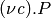 (“new c in P”) may be thought of as allocating a new constant communication channel c within the process P. The symbol
 is the Greek letter nu, pronounced like “new”.
is the Greek letter nu, pronounced like “new”.The alternative operator (“P plus Q”) represents a process capable of taking part in exactly one alternative for communication. That process cannot make the choice among its alternatives; that selection among alternatives cannot be determined until it occurs, and once determined, any remaining alternatives have lost their chance and will never occur. (These restrictions on the alternative operator are not strictly necessary for
-calculus to work, but they simplify the theory.)
Besides these operations, there is one constant process 0 that does nothing. For example, we might write 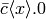 for a process that sends one message across a channel c, then does nothing more.
Observe that all of the operations have to do with entire processes or with communication among processes. For example, there are no arithmetic operations such as multiplication, nor any operations related to applying (i.e., calling) functions, nor a way to store values in memory (assignment). The
-calculus is entirely concerned with communication among processes that are executing in parallel.However, a theory of sequential processes, such as automata or the
-calculus, can be used in conjunction with -calculus in order to model both the parallelism of communication and sequential algorithms that take place between communication events.In our examples, we will use an informal notation for the sequential aspects of a process for readability and convenience, but we will use the
-calculus formalism carefully in matters of parallelism and communication between processes.Here is an example that models parallel computation using the
-calculus operators.A client-server application is a parallel system in which a program running on one computer, called the server program, responds to requests that may be sent by programs that may be running on other computers, called client programs. One example of a client-server application consists of web browsers (as clients) communicating with a web server (as server). However, there are other possibilities.
Consider a client-server application in which clients send requests to a server to apply a particular function to arguments that a client provides. In CS, this type of service is called remote procedure call (RPC) (where “procedure” is another term for “function”). RPC can enable clients to obtain the results of computations that those clients may be unable to compute on their own “local” hardware.
We will model RPC using a simple incrementing function.
Here is C++ language code for the desired function.
int incr(int x){ return x+1; }In case you are not a programmer: The first line indicates that the name of this function is incr, and that incr accepts one integer input (argument) named x and returns an integer value (as indicated by the int at the beginning of the line). The second line is a return statement, which specifies the output (“return value”) in terms of the input x. This incrementing function returns the value x+1.
Here is a model for the server process:
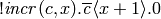
Here, the expression x+1 indicates sequential code, but the remainder of the expression uses
-calculus formalism. Observe that incr is a channel for communicating to the server.The use of the replication operator ! means that the entire remainder of the expression will be duplicated as many times as needed (in order to serve as many RPC requests as may arrive over time). We will consider the operator ! to have higher precedence that | and + but lower precedence than the other
-calculus operators; this means that the expression above is equivalent to
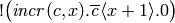
Here is C++ code for part of a client process:
y = incr(17) ...
The dots represent steps to be taken after accomplishing a remote procedure call of incr.
Note
for non-programmers
In this C++ context, the symbol = is an assignment operator, not an equality relation. The effect is to compute the result of applying the function incr with input value 17, and to store the output (return value) into computer memory under the name y.
Note
for everyone
The mathematical effect of making an assignment is substitution. In other words, the assignment of 18 to y means that every occurrence of y should be replaced by 18 throughout the program steps indicated by dots above.
Here is a model for that client process, starting from the assignment above:
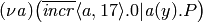
Here, we create a new channel a and send that channel, together with the value 17 that we want to increment, to the server, using the incr channel from client to server. The channel a is for communicating from the server back to the same client. Observe that the output along incr requesting the service takes place in parallel with the input along a for delivering the result. (Of course, the first of these will necessarily occur before the second in this particular situation.) The entire client model consists of
-calculus expressions, except for the integer 17.In this expression, the process P represents steps the client will take after the remote procedure call of incr. In other words, P represents the dots in the client code above. We want RPC to cause y to be replaced by 18 throughout P.
We can now express a model for the entire client-server application.
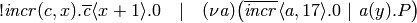
Structural congruence, an equivalence relation on
-calculus expressionsReduction, the “calculus rules” for
-calculus.We can now use the definition of structural congruence and the reduction rules to give a formal proof that our
-calculus model of an incr remote procedure call service produces the results we desired for it.
Verify
![!{\it incr}(c,x).\overline{\it c}\langle x+1 \rangle.{0}\quad |\quad (\nu{\it a})\big(\overline{\it incr}\langle a,17 \rangle.{0}\ |\ {\it a}(y).{P}\big)
\equiv \quad {\it incr}(c,x).\overline{\it c}\langle x+1 \rangle.{0}\quad |\quad !{\it incr}(c,x).\overline{\it c}\langle x+1 \rangle.{0}\quad |\quad (\nu{\it a})\big(\overline{\it incr}\langle a,17 \rangle.{0}\ |\ {\it a}(y).{P}\big)
\text{by structural congruence axiom for !}
\text{(this dispenses a copy of the server process to use)}
\equiv \quad !{\it incr}(c,x).\overline{\it c}\langle x+1 \rangle.{0}\quad |\quad{\it incr}(c,x).\overline{\it c}\langle x+1 \rangle.{0}\quad |\quad (\nu{\it a})\big(\overline{\it incr}\langle a,17 \rangle.{0}\ |\ {\it a}(y).{P}\big)
\text{by commutative law for }|
\longrightarrow \quad !{\it incr}(c,x).\overline{\it c}\langle x+1 \rangle.{0}\quad |\quad \overline{\it c}\langle x+1 \rangle.{0}[c,x/a,17]\quad |\quad (\nu{\it a})\big(0\ |\ {\it a}(y).{P}\big)
\text{by main reduction rule (this corresponds to sending a message)}
\text{\textit{Note:} the notation [c,x/a,17] means to replace c by a and replace x by 17.}
= \quad !{\it incr}(c,x).\overline{\it c}\langle x+1 \rangle.{0}\quad |\quad \overline{\it a}\langle 18 \rangle.{0}\quad |\quad (\nu{\it a})\big(0\ |\ {\it a}(y).{P}\big)
\text{by definition of substitution and arithmetic}
\equiv \quad !{\it incr}(c,x).\overline{\it c}\langle x+1 \rangle.{0}\quad |\quad \overline{\it a}\langle 18 \rangle.{0}\quad |\quad (\nu{\it a})\big({\it a}(y).{P}\ |\ 0\big)
\text{by commutativity axiom for }|
\equiv \quad !{\it incr}(c,x).\overline{\it c}\langle x+1 \rangle.{0}\quad |\quad \overline{\it a}\langle 18 \rangle.{0}\quad |\quad (\nu{\it a})\big({\it a}(y).{P}\big)
\text{by identity axiom for }|
\longrightarrow \quad !{\it incr}(c,x).\overline{\it c}\langle x+1 \rangle.{0}\quad |\quad 0 \quad |\quad (\nu{\it a})\big(P[y/18]\big)
\text{by main reduction rule}
\equiv \quad !{\it incr}(c,x).\overline{\it c}\langle x+1 \rangle.{0}\quad |\quad (\nu{\it a})\big(P[y/18]\big)
\text{by associativity and identity for }|](../_images/math/5b4d79329d33618e6bdb51c2f2b03fcfefa9a578.png)
In this proof, we started with the -calculus expression for the server and the -calculus expression for the client before RPC, running in parallel. We ended with that same server we began with, and with a client process P after RPC that has every occurrence of y replaced by 18 – as desired.
Exercises¶
- If a does not appear in P, show that the last line above is structurally congruent to 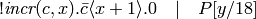. Give a formal proof segment using the axioms and reduction rules.
- Prove the following facts, using formal proofs from axiom and reduction rules, as in the verification of the RPC server above.
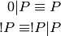
- Write a -calculus expression that models an RPC system for an echo function, whose return value (output) is the same as its argument (input).
Hints:
Modify the RPC example for incr to serve echo instead. You can use the same client expression as before, but you will need to alter the server expression. Since the problem asks for a system instead of only a server, your final answer should be a -calculus expression for both the client and the server.
Here’s a C++ programming language definition of echo, in case it’s helpful.
int echo(int x){
return x;
}
- Examine the formal proof of the -calculus model of an incr RPC service above, and indicate how to transform it to a proof of your -calculus model of an echo RPC service in the previous problem.
- Consider the following -calculus model.
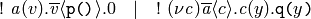
Here, the notations p() and q(x) represent sequential computer functions, and are not part of the
The function p() requires no arguments and sequentially produces a return value (output) when called (applied).
The function q(x) requires one argument (input) x and performs some sequential operation with that argument when called.
Answer the following questions:
- This model formally describes an interaction between two programs running in parallel. Give an informal verbal description of what those two programs do and how they interact, according to the
- Perform
- You may give a thorough formal computation as in the proof of the incr RPC system, or you may skip or combine steps you feel comfortable with, as long as your work is accurate and expresses the calculation clearly.
- Write your own -calculus expressions for modeling each of the following parallel computations. (Each itemized sentence describes a separate problem to solve.) Note: No -calculus replication operations are necessary for these problems, although you may optionally include it.
- One program uses channel a to send an integer value 5 and a new channel to another program, and that latter program sends twice that integer value back to the first program along that new channel.
- One program uses channel b to send an integer value 10 and a new channel to another program; that second program uses channel c to send twice that integer value and that same new channel to a third program; and that third program outputs three times the integer it receives along the channel it receives to the first program.